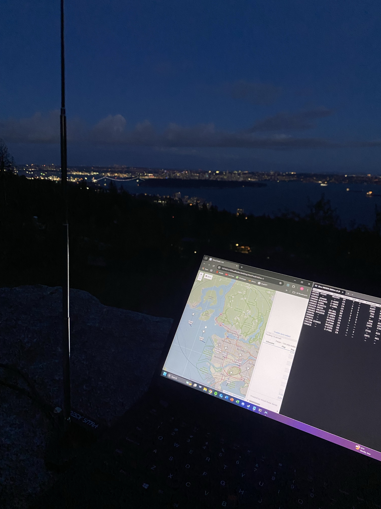
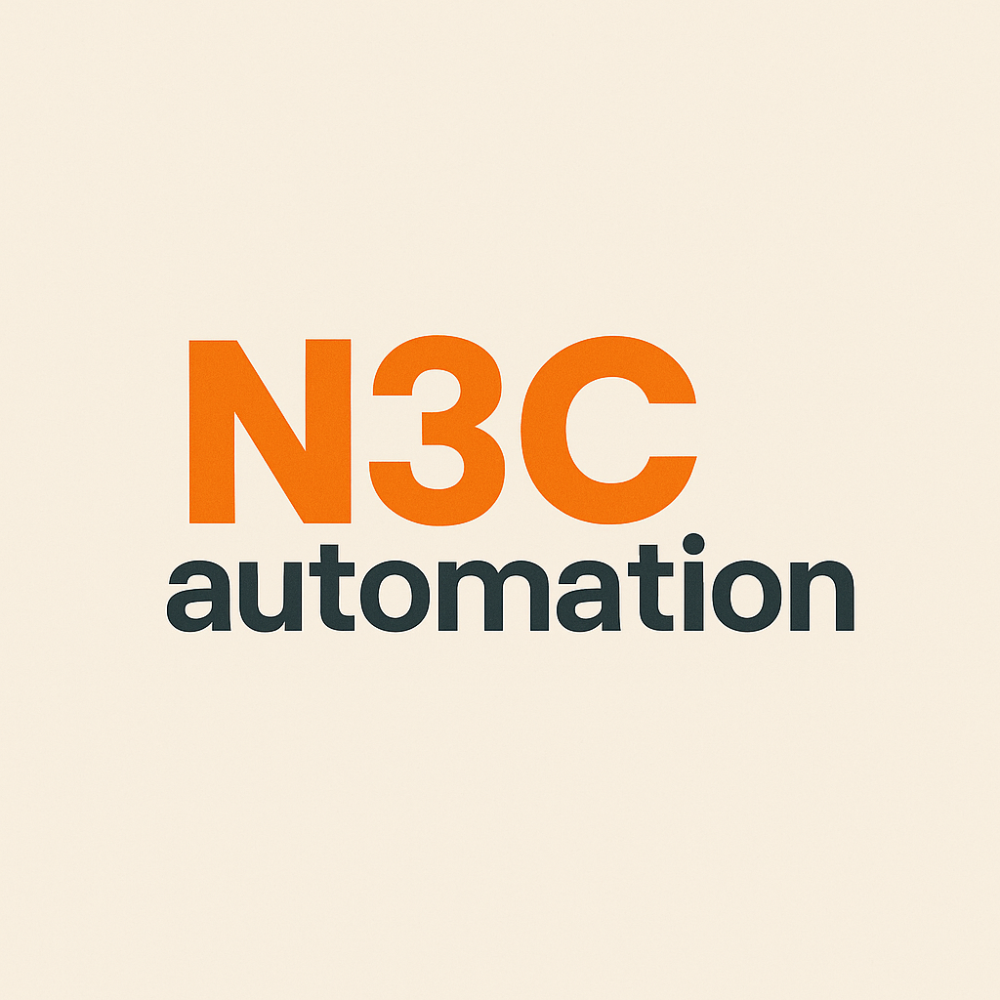

Explore real-world no-code projects built by students using tools like AI, automation platforms, and visual development environments. These showcases highlight practical innovation without traditional programming.
Offline Radar Setup
How AI Was Used
Used for future flight path analysis, anomaly detection, and signal classification. Future steps include predictive modeling with Python.
Purpose
Create an offline system for tracking aircraft via ADS-B signals, without depending on any network connection.
Problem It Solves
– Transparent local airspace data
– No reliance on online trackers
– STEM education in signal tech
Applications
– Local aviation security
– Drone coordination
– Technical education
How I Built It
Hardware: RTL-SDR v3, SMA antenna, ThinkPad T495 (Zorin OS)
Software: Dump1090, GQRX, Virtual Radar Server
Steps: Connect antenna → decode with Dump1090 → visualize → plan AI analysis
Automated Reel Maker
How AI Was Used
AI generates script summaries, voiceovers, finds matching stock footage, and autocomposes the entire video using Python.
Purpose
To automate the creation of engaging TikToks and YouTube Shorts with zero editing required from the user.
Problem It Solves
– Speeds up content pipelines
– Enables hands-free video publishing
– Consistent quality and timing
Applications
– Passive income channels
– Content repurposing
– Education, storytime, productivity niches
How I Built It
Stack: Python (MoviePy, ElevenLabs, Pexels API, OpenAI)
Pipeline: Reddit scrape → summarize → script → voice → b-roll → captions → export